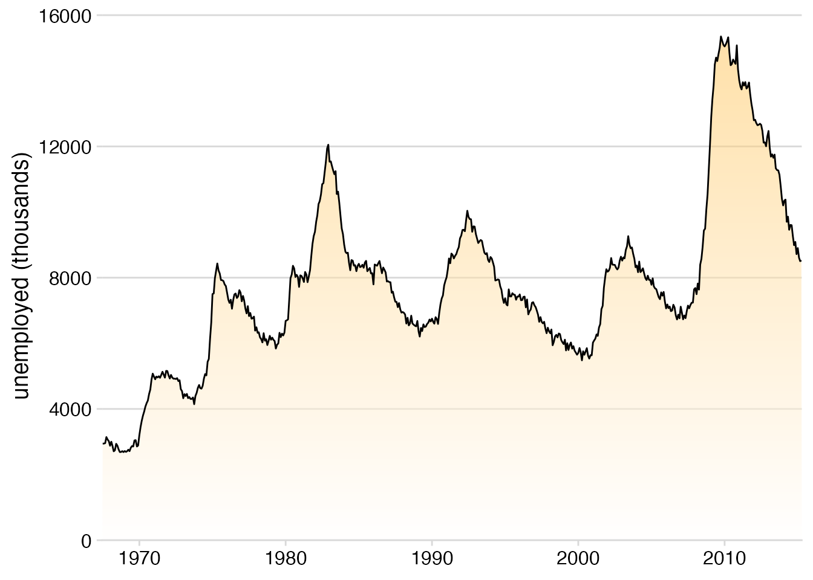
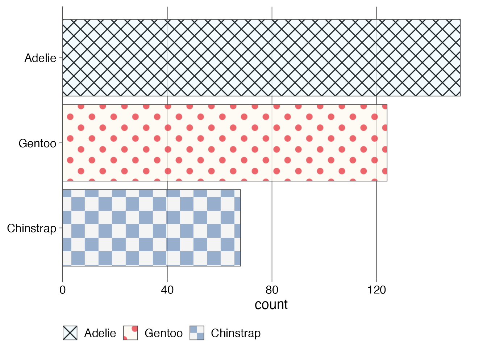
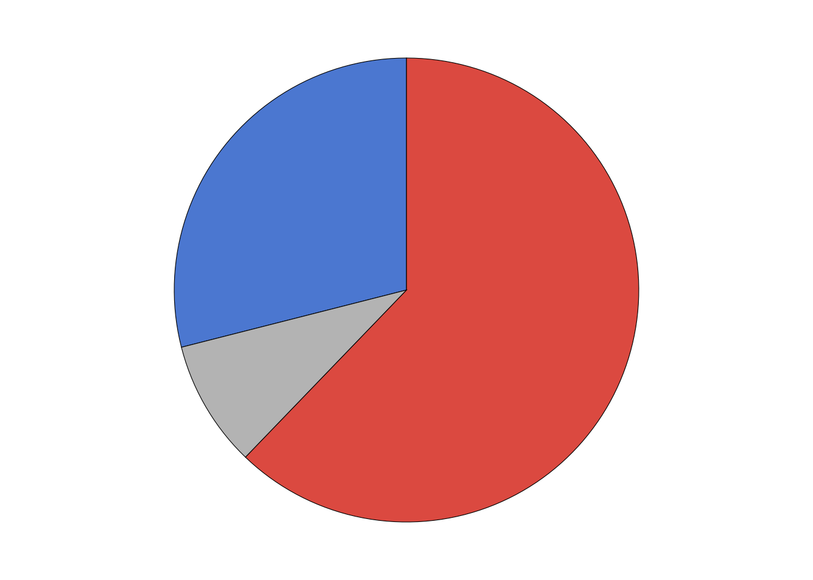
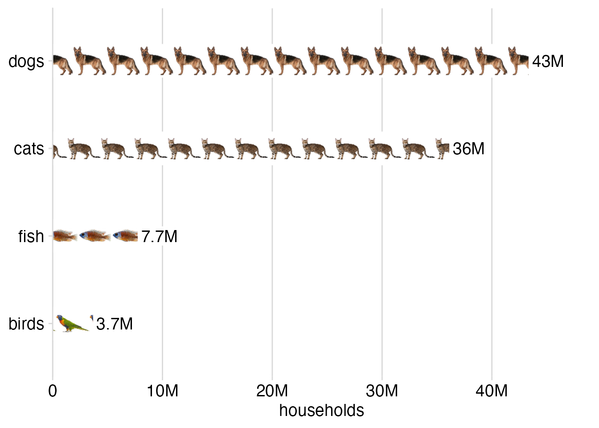

# Run this command to install the required packages.
# You need to do this only once.
install.packages(
c(
"tidyverse", "cowplot", "sf", "ragg",
"palmerpenguins", "magick", "ggpattern"
)
)Effective Data Visualization with ggplot2
Gradient and pattern fills
Required packages
Install the required packages:
For all applications of gradient and pattern fills you need to use a graphics device that supports these features. In Quarto, you can do this by adding the following to the YAML section of the document:
knitr:
opts_chunk:
dev: "ragg_png"1. Basics of gradient and pattern fills
With the release of ggplot 3.5.0, we now have the ability to fill areas with gradients or patterns. This is a native feature supported by the R graphics engine, and it is quite powerful. However, the various features only work to the extent they are supported by the graphics device. We recommend the ragg device for maximum feature support.
Let’s start with some basic gradient and pattern fills. First we load the required packages.
library(tidyverse)
library(grid) # for pattern creation
library(cowplot) # for theme functions
library(palmerpenguins) # for `penguins` datasetGradients and patterns are defined via functions from the grid package, specifically grid::linearGradient(), grid::radialGradient(), and grid::pattern(). Once defined, these objects can then be used instead of colors wherever a fill color is specified.
So let’s define a simple gradient and use in a plot:
# define a linear gradient object
orange_gradient <- linearGradient(
# gradient colors, orange to white
colours = c("orange", "white"),
# gradient runs vertically
x1 = 0, y1 = 1.5,
x2 = 0, y2 = 0,
# gradient is applied to each polygon separately
group = FALSE
)
ggplot(economics, aes(date, unemploy)) +
# use gradient object like a fill color in geom
geom_area(fill = orange_gradient, alpha = 0.5) +
geom_line() +
scale_x_date(
name = NULL,
expand = expansion(mult = c(0, 0))
) +
scale_y_continuous(
name = "unemployed (thousands)",
expand = expansion(mult = c(0, 0.05))
) +
theme_minimal_hgrid()
Let’s move on to a more complex example. Let’s make three separate fill patterns and use them to define a fill scale. The patterns are a checkerboard, polkadots, and a cross hatch. Defining these patterns requires some knowledge of the grid graphics engine, which can be quite arcane, but it is very powerful and you can basically make up any fill pattern you want.
# checkerboard
checkerboard <- pattern(
rectGrob(
x = c(0, 0.5, 0, 0.5),
y = c(0, 0.5, 0.5, 0),
width = 0.5, height = 0.5,
just = c(0, 0),
gp = gpar(
fill = c("#F0F0F0C0", "#F0F0F0C0", "#7593BCC0", "#7593BCC0"),
col = NA
)
),
width = unit(10, "mm"), height = unit(10, "mm"),
extend = "repeat"
)
# polkadots
polkadots <- pattern(
grobTree(
rectGrob(gp = gpar(fill = "#FEFAF0C0", col = NA)),
circleGrob(
x = c(.2, .7), y = c(0.2, .7),
r = 0.15,
gp = gpar(
fill = c("#E4343DC0"),
col = NA
)
),
vp = viewport(width = unit(8, "mm"), height = unit(8, "mm"))
),
width = unit(8, "mm"), height = unit(8, "mm"),
extend = "repeat"
)
# crosshatch
crosshatch <- pattern(
grobTree(
rectGrob(gp = gpar(fill = "#F0FAFEC0", col = NA)),
segmentsGrob(
x0 = c(0, 0), y0 = c(0, 1),
x1 = c(1, 1), y1 = c(1, 0),
gp = gpar(col = "#182124", lwd = 1.5)
),
vp = viewport(width = unit(5, "mm"), height = unit(5, "mm"))
),
width = unit(5, "mm"), height = unit(5, "mm"),
extend = "repeat"
)The patterns are defined, so we put them into a list for easy use later on.
patterns <- list(
checkerboard, polkadots, crosshatch
)Now we can use this list of patterns just like we would use colors when defining a manual fill scale.
penguins |>
count(species) |>
mutate(species = fct_reorder(species, n)) |>
ggplot(aes(n, species, fill = species)) +
geom_col(color = "gray30", linewidth = 0.3) +
scale_fill_manual(
name = NULL,
# here we're using patterns instead of colors
values = patterns,
guide = guide_legend(
position = "bottom",
reverse = TRUE
)
) +
scale_x_continuous(
name = "count",
expand = expansion(mult = c(0, 0.05))
) +
scale_y_discrete(
name = NULL
) +
theme_minimal_vgrid(
color = "gray30",
line_size = 0.3
)
We see that the patterns are also applied to the legend. I would not normally want a legend in this type of plot, as it is not necessary, but this demonstrates how powerful and general the approach is.
Exercises
Exercise 1.1: Make your own gradient for a plot with gradient fill. Try both a linear gradient (made with grid::linearGradient()) and a radial gradient (made with grid::radialGradient()). Try different colors, gradient directions, and other modifications these functions allow you to make.
Exercise 1.2: Make your own patterns for the bar plot with pattern fill.
2. Plots overlaid on a map
We’ll be visualizing state-level election results from the 2016 US presidential election. Let’s begin with loading the required packages and main data. The data table provides us with the election results for the democratic, republican, and other candidates for each county in the US. Counties are identified by their fips codes.
library(sf) # for manipulating geospatial data
# data taken from: https://github.com/john-guerra/US_Elections_Results/tree/master
votes_2016 <- read_csv("https://wilkelab.org/dataviz_shortcourse/datasets/2016_US_County_Level_Presidential_Results.csv") |>
mutate(
fips = str_pad(combined_fips, 5, pad = "0"),
state = state_abbr
)
votes_long <- votes_2016 |>
mutate(
other = total_votes - votes_dem - votes_gop
) |>
select(
state, fips, democratic = votes_dem, republican = votes_gop, other
) |>
pivot_longer(c(-state, -fips), names_to = "party", values_to = "votes")
votes_long# A tibble: 9,423 × 4
state fips party votes
<chr> <chr> <chr> <dbl>
1 AK 02013 democratic 93003
2 AK 02013 republican 130413
3 AK 02013 other 23172
4 AK 02016 democratic 93003
5 AK 02016 republican 130413
6 AK 02016 other 23172
7 AK 02020 democratic 93003
8 AK 02020 republican 130413
9 AK 02020 other 23172
10 AK 02050 democratic 93003
# ℹ 9,413 more rowsWe will display the results for each county as a pie chart. Let’s write a function to generate those plots.
make_pie_plot <- function(data) {
ggplot(data) +
aes(votes, "", fill = party) +
geom_col(color = "black", linewidth = 0.2) +
coord_polar() +
scale_fill_manual(
values = c(democratic = '#4B77D0', republican = '#DB4940', other = "gray70"),
guide = "none"
) +
theme_void()
}
votes_long |>
# filter for Laramie county, Wyoming
filter(fips == "56021") |>
make_pie_plot()
Our goal is to overlay the pie charts for each county onto a map. So next we load the geometry data for the map. Note that the trick we will be using here (using pattern fills to overlay plots on top of a map) works best if the map data is provided in projected coordinates. This is the case in the data set I am using. If you have data that has not been projected yet, look into sf::st_transform() on how to project your data.
# load geometry data
counties <- readRDS(url("https://wilkelab.org/dataviz_shortcourse/datasets/US_counties.rds")) |>
mutate(
fips = as.character(GEOID),
state = state_code
)
# make plot of Wyoming
counties |>
filter(state == "WY") |>
ggplot() +
geom_sf() +
theme_void()
We need to turn the pie chart for each county into a fill pattern. Let’s write a function that creates a pattern for one county and apply to all counties in Wyoming.
make_pie_pattern <- function(data) {
p <- make_pie_plot(data)
pattern(
ggplotGrob(p),
extend = "none",
group = FALSE
)
}
vote_pies <- votes_long |>
filter(state == "WY") |>
select(-state) |>
nest(data = -fips) |>
mutate(
pie_pattern = map(data, make_pie_pattern),
vote_total = map_dbl(data, ~sum(.x$votes))
) |>
select(-data)Now we are ready to make the plot.
counties |>
filter(state == "WY") |>
mutate( # calculate reference point for each county
points = st_point_on_surface(st_zm(geometry)),
county_x = st_coordinates(points)[, "X"],
county_y = st_coordinates(points)[, "Y"]
) |>
left_join(vote_pies, by = "fips") |>
mutate( # calculate plot scale
scale = 250 * sqrt(vote_total), # 250 was chosen by trial and error
) |>
ggplot() +
geom_sf(color = "gray40", fill = "gray95", linewidth = 0.2) +
geom_rect(
aes(
geometry = geometry,
xmin = county_x - scale,
xmax = county_x + scale,
ymin = county_y - scale,
ymax = county_y + scale,
fill = pie_pattern
),
stat = "sf_coordinates"
) +
theme_void()
Exercises
Exercise 2.1: Use side-by-side bar plots instead of pie charts.
3. Isotype plots
Because patterns can consist of any grid graphics ojbects, we can also turn images into patterns. This allows us to make isotype plots, where a data value is represented by an iconic image.
The approach is the same as before. First we write a function that can turn an image into a pattern, and run it over all the images we want to work with.
make_img_pattern <- function(img) {
pattern(
rasterGrob(
x = 0, hjust = 0, # needed to left-align the images
magick::image_read(img),
width = unit(20, "mm"),
height = unit(20, "mm"),
interpolate = FALSE
),
x = 0, hjust = 0, # needed to left-align the images
width = unit(20, "mm"),
height = unit(100, "mm"), # extra height to avoid vertical image replication
extend = "repeat",
group = FALSE
)
}
patterns <- map(
c( # order has to be from bottom to top alon y axis
"https://wilkelab.org/dataviz_shortcourse/images/bird.png",
"https://wilkelab.org/dataviz_shortcourse/images/fish.png",
"https://wilkelab.org/dataviz_shortcourse/images/cat.png",
"https://wilkelab.org/dataviz_shortcourse/images/dog.png"
),
make_img_pattern
)Then we make the plot. Here it is a simple bar plot.
# data source: 2012 U.S. Pet Ownership & Demographics Sourcebook,
# American Veterinary Medical Association
pet_ownership <- read.table(text = "pet households
dogs 43346000
cats 36117000
fish 7738000
birds 3671000
", header = TRUE)
pet_ownership |>
mutate(
pet = fct_reorder(pet, households)
) |>
ggplot() +
aes(y = pet, x = households, fill = pet) +
geom_col() +
geom_label(
aes(label = paste0(signif(households*1e-6, 2), "M")),
hjust = 0,
vjust = 0.5,
nudge_x = .1e6,
size = 14,
size.unit = "pt",
label.size = 0, # no label outline
label.padding = unit(2, "pt"),
fill = "#FFFFFF"
) +
scale_x_continuous(
limits = 1e6*c(0, 49),
breaks = 1e7*(0:4),
labels = c("0", paste0(10*(1:4), "M")),
name = "households",
expand = c(0, 0)
) +
scale_y_discrete(
name = NULL
) +
scale_fill_manual(
values = patterns,
guide = "none"
) +
theme_minimal_vgrid(rel_small = 1)
An alternative way to produce a plot like this is with the ggpattern package (see exercises). I’ll leave it to you to decide which method you find easier.
Exercises
Exercise 3.1: Create a version of the pet ownership isotype plot where bars run vertical instead of horizontal.
Exercise 3.2: Recreate the pet ownership isotype plot with ggpattern.